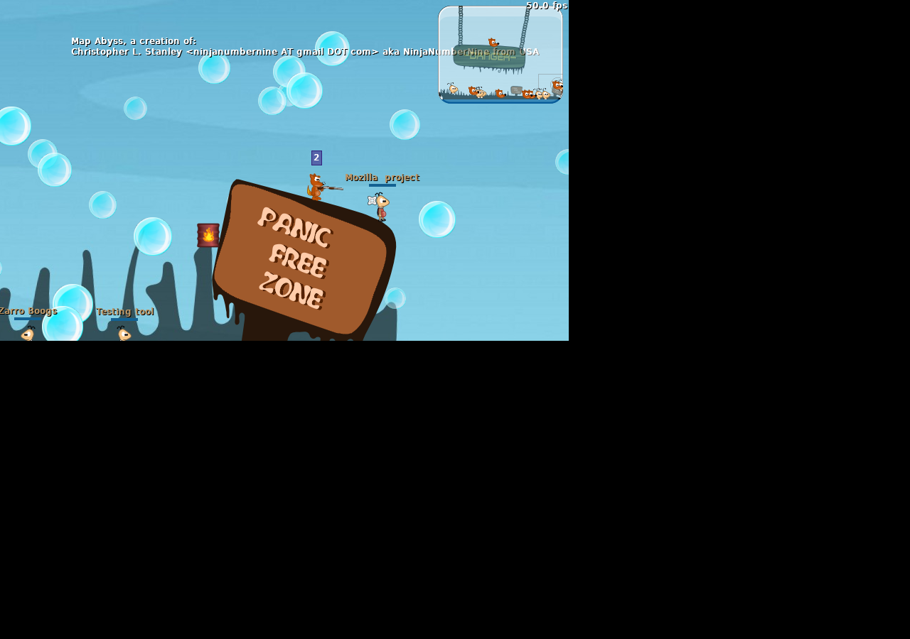

Play Check
PARTIALLY TESTED
Reached WarMUX local-match/menu screen with nonblank screenshot.
Detailed test logs are kept for operators.
A light Worms-like artillery game with teams, turn timing, weapons, and destructible terrain.
Native Artillery - Worms-like - Strategy,Artillery,Native

PARTIALLY TESTED
Reached WarMUX local-match/menu screen with nonblank screenshot.
Detailed test logs are kept for operators.
Stored in the arcade's local offline download shelf. Seed packages: warmux, warmux-data.
Worms-like turn artillery game stored from Debian packages with no-internet launch check.
Available local notes and manuals found for this game.